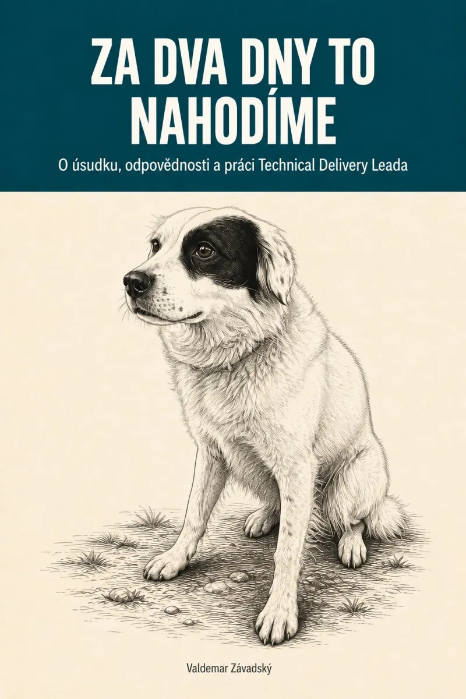

Za dva dny to nahodíme
O úsudku, odpovědnosti a práci Technical Delivery Leada.
Knihu si můžeš stáhnout zdarma, bez registrace. PDF se hodí i na tisk, EPUB na čtení v telefonu nebo čtečce.
O čem to je
Na poradě zazní „za dva dny to nahodíme“, ale ani za týden není co vyzkoušet. Vývojáři mají svoje části hotové, jenže dohromady ještě nefungují. V knize rozebírám právě takové situace: jak zjistit, na čem projekt stojí, a co s tím udělat.
Píšu o práci Technical Delivery Leada, který musí rozumět technickému řešení a zároveň hlídat, co tým dokáže v dohodnutém čase a rozpočtu dodat. Kdy se dá věřit odhadu? Pomůže přidat lidi? Co si vyzkoušet, když všechny reporty vypadají dobře? A jak vést projekt, aby se bez tebe nezastavil?
Vycházím ze svých zkušeností s AI produkty, podnikovými systémy i vývojem platebního zařízení. Píšu o tom, v čem jsem se spletl, o čekání na ostatní týmy a o tom, co s lidmi udělá dlouhodobý tlak na termín. Příběhy jsem anonymizoval a mírně upravil, jejich základ je skutečný. Na konci kapitol najdeš shrnutí a otázky k vlastnímu projektu, v příloze pak návrh, čemu se věnovat během prvních deseti dní po jeho převzetí.
Věnuju se i tomu, jak AI mění každodenní práci týmu. Kód vzniká rychleji, ale někdo ho musí přečíst, propojit se zbytkem systému a ověřit na skutečných datech. I na to musí v plánu zbýt čas.
Pro koho jsem ji napsal
Pár vět z knihy
„Špatný odhad nebo přehlédnutá závislost nezmizí tím, že se rychleji programuje.“Předmluva
„Uzavřený tiket potvrzuje, že někdo považuje práci za hotovou. Neříká, zda celek dělá to, co zákazník potřebuje.“Kapitola 5: Status je zelený. A funguje to?
„Tempo, které si TDL zvolí sám pro sebe, je jeho osobní volba a nikdy se nesmí mlčky stát normou pro ostatní.“Kapitola 10: Tempo, které tým unese
„To, že něco pomohlo minule, nestačí. Je potřeba posoudit, jestli jsou pro to podmínky i tady.“Kapitola 12: Úsudek, který se dá předat
Obsah
- Předmluva aneb kniha za pět minut
- Na úvod
- 1.Život mezi obdélníky
- 2.Číslo, které nešlo dodat
- 3.„Dost dobré“ není sprosté slovo
- 4.Tým není násobilka
- 5.Status je zelený. A funguje to?
- 6.Autonomie ano, neviditelnost ne
- 7.Nejdřív lešení, potom fasáda
- 8.Riziko, kterému rozumí i obchod
- 9.Být blízko, ale nestát v cestě
- 10.Tempo, které tým unese
- 11.Projekt nekončí akceptací
- 12.Úsudek, který se dá předat
- Kam se poděl projektový manažer?
- Doslov: proč tento text vznikl
- Příloha: prvních deset dní v běžícím projektu
Nemáš čas na celou knihu? Začni kapitolami 2 (odhad není totéž co proveditelnost), 5 (zelený status ještě neznamená, že to funguje) a 8 (jak mluvit o riziku, aby se podle toho dalo rozhodnout).
Na obálce
Na obálce je náš pes Rex, který má nejvíc rysů po border kolii. Vydrží běhat celý den a nechápe, proč ostatní ne. Vracím se k němu v kapitole 10, kde píšu o svém pracovním tempu a o tom, proč ho nemůžu chtít po celém týmu.
O mně
Jmenuju se Valdemar Závadský a dodávkám softwaru se věnuju pětatřicet let. Pracoval jsem na informačních systémech státní správy, v telekomunikacích i na platebních zařízeních, dnes se v CLOUDFIELD a.s. věnuju AI produktům. Knihu jsem napsal i pro kolegy, kteří mají vedení podobných projektů převzít. Chtěl jsem jim předat zkušenosti, které bych sám na začátku ocenil.